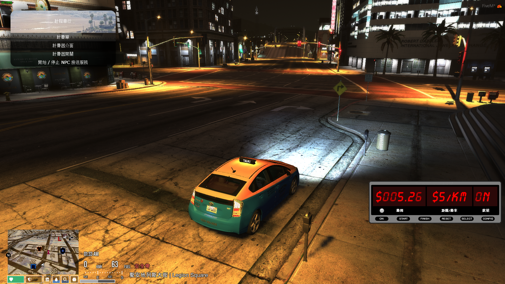
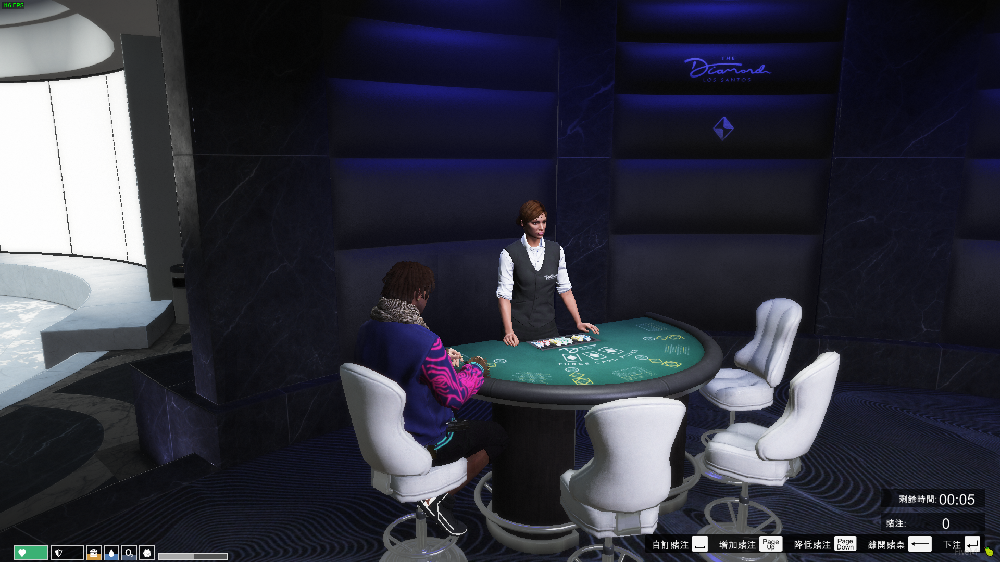
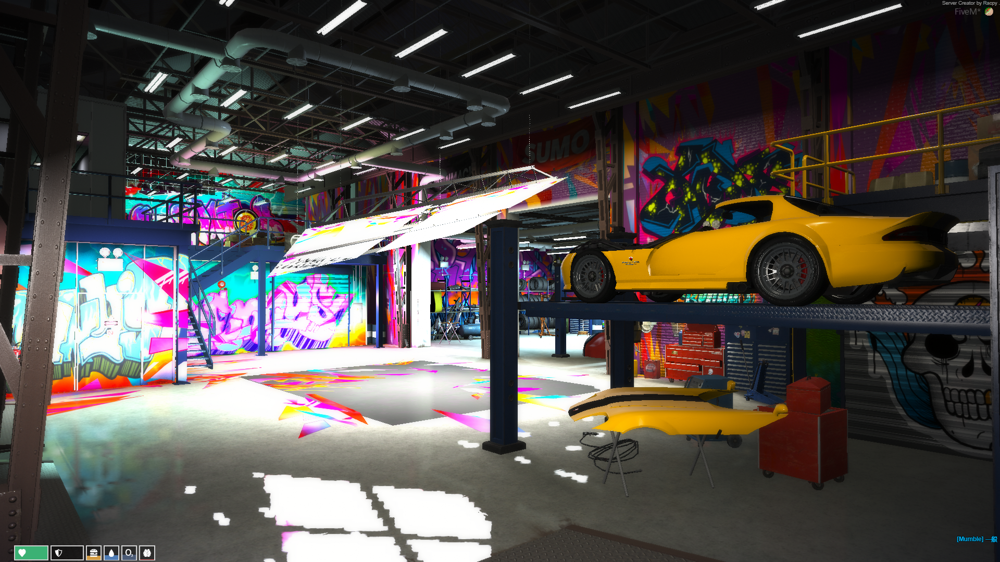
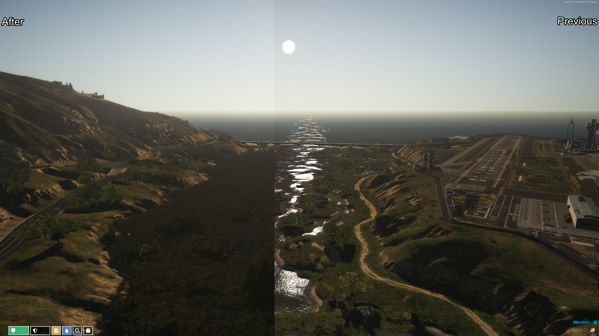
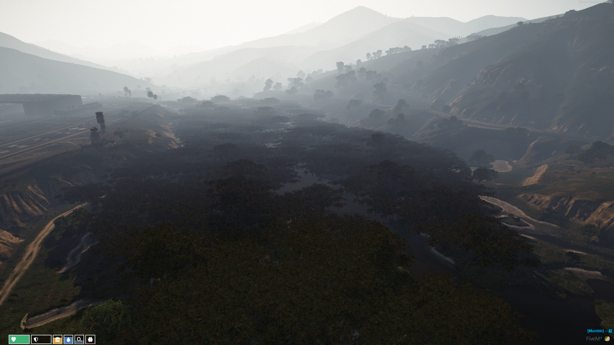
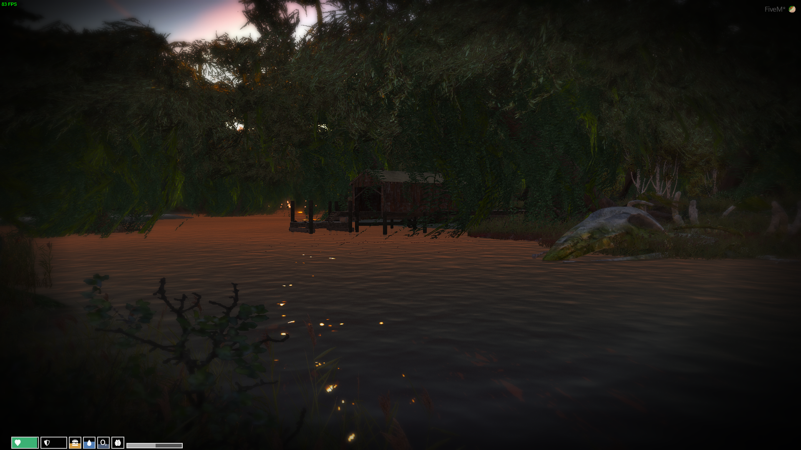
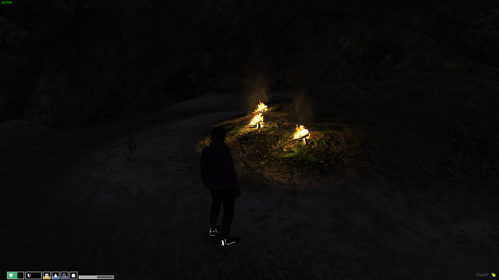

5/20 ~ ?/? update : vPre
-------------------------------------------------------------------------------------
發電廠PVE : 任務成功後會停電5分鐘並獲得獎勵，NPC不會攻擊警察
新的背包介面、快捷鍵功能，按下 [TAB] 可顯示快捷物品
新的角色狀態UI

新增壓力系統 : 壓力達到一定程度會畫面晃動 , 畫面晃動隨著壓力多寡決定
警用探測器更新 , 可鎖定探測車牌、自訂快捷鍵、介面大小及更多細項調整

新增警用載具追蹤功能 , 追蹤時效 : 10分鐘 , 可追蹤2輛載具 , 按鍵 : U

計程車行跳表更新 , 跳表啟用時載具停止移動也會緩慢增加金額 * 移除

架設賭場黑傑克21點 , 籌碼可至櫃台購買及退還

更新警察接獲通知的提示

稍微增加擊殺NPC竊車取得鑰匙的機率
新增可裝置於載具上的智慧型炸藥
新增可裝置於載具上的GPS追蹤器 * 移除
新增另一類型收費車庫 , 可看見其他玩家在該停車場停的載具 * 移除
修正v1.8更新小地圖及地圖帶有郵政編碼美化造成秋明山地圖路線消失的問題
移除修車廠開鎖包製作
現在紙條也能拖曳至使用 , 改為每使用一次消耗一張
移除部分酒品提供的buff
玩家步行時隱藏地圖
減少載具毀損受到的傷害 20%
警用軍械庫武器調整
移除警用測速槍
降低載具熱接線時間
調整進食手上物件至準確的角色骨架位置
調整進入載具後顯示的HUD
現在補充武器子彈要購買正確的子彈類型使用
-- 使用合成獲得一些物品來觸發特定事件
work in progress :
1. 返回v1.8更新 , 領取載具不會傳送至駕駛座的設定
2. 修復熱接線部分錯誤
3. 現在拖吊場領回載具後需等待5分鐘後才能再次使用 ( 警察、醫護 等待2.5分 ) 如果地圖上還存在這輛載具 , 領取會取消
4. 現在角色在載具中可使用指令seat切換座位 , 使用範例 /seat 座位 . -1 : 駕駛座 , 0 : 副駕駛 , 以次類推
5. 現在所有玩家可以對雙手舉起或死亡的玩家進行搜身
6. 現在角色跳躍有75%機率跌倒
7. 可以自己種植大麻 , 有四種品種
8. 使用門鎖時新增動畫及音效
9. 地圖毒品採集僅保留古柯鹼 , 移除其他毒品
10. 重製毒品使用效果 , 如果你的毒品狀態值高於50%會獲得以下buff : 1. 無限體力 2. 移動速度1.1倍 3. 每0.5秒增加1護甲
11. 毒品販售改為向NPC互動 , 共有五種樣式毒品 , 互動成功後NPC會擇一購買
12. 地圖上新增密醫 , 收費同醫護局 , 冷卻時間30分鐘
13. 移除角色死亡時每60秒刷新屍體, ( 這有時會發生令人不愉快的事情 .. 例如重生後60秒仍依舊在倒數 , 此時若在載具上會被刷新 this is shit . 現在角色死亡後可按下 [E] 刷新屍體 , 冷卻時間30秒
14. 新的手機功能
15. 移除爆胎機率
16. 新的釣魚系統 , 如果釣魚成功後提示為黑底紅字表示你幸運獲得更多的數量
17. 新的語音系統及無線電功能
18. 重新裝潢警察局
19. 修車廠基地調整

20. 現在本地生成 ( 角色、載具 ) 會根據線上玩家數量調整比例 , 線上玩家越多 本地生成越少
21. 調整警用及醫用載具車庫系統
22. 調整修車動畫及判定
23. 降低蹲下的動畫速度
24. 新的自訂警鈴
25. 移除黑錢
26. 移除武器零件物品
27. 在加油站消費完新增最後消耗金額提示
28. 如果職業是警察 , 使用武器時會自動安裝武器零件
29. 重建軍事基地旁濕地 , 現在更像是個叢林




30. 優化客戶端性能 , 與v1.82相比增幅將近15FPS左右 ( 依據電腦配備 )
31. 新增自行車租賃判定，防止租用載具後遺失載具不能再次租賃